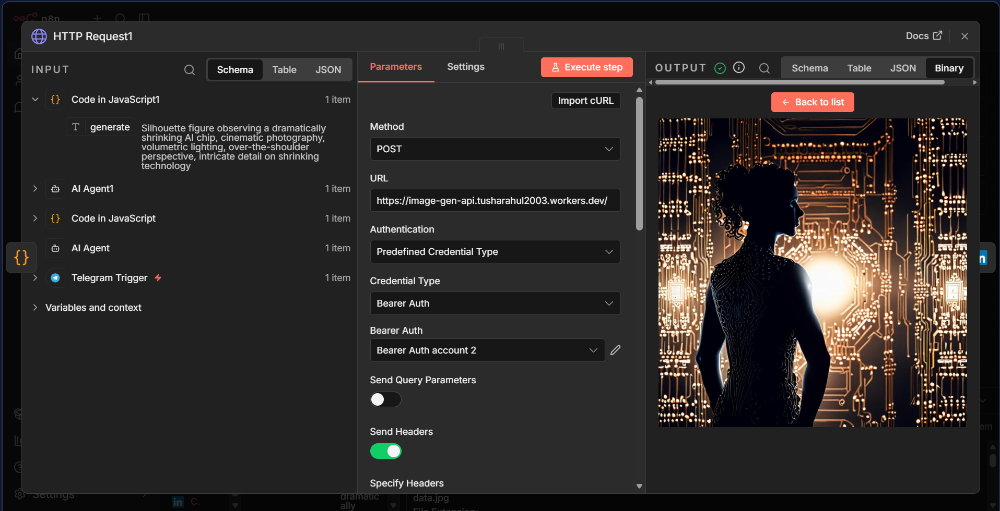

Overview
LinkedIn Content Automation is a sophisticated multi-agent automation engine that generates context-aware professional content and visuals using n8n, GPT-4, and serverless image generation. This system enables automated, high-quality LinkedIn posting without manual intervention.
System Architecture
The system follows a serverless, event-driven architecture built on n8n as the orchestration layer.
Multi-Agent Orchestration
Coordinated AI agents handle topic selection, content drafting, image generation, and posting - each with specialized prompts and validation logic.
Context-Aware Generation
Each post is enriched with current trends, recent interactions, and topic-specific terminology to maintain authentic professional voice.
Automation Workflow
The system analyzes recent engagement metrics and trending topics to identify high-potential subjects for the next post.
GPT-4 generates multiple content variations with different tones (educational, inspirational, technical). Each variation is scored for engagement potential.

Using Replicate's FLUX model, the system generates context-relevant images that match the post's theme and LinkedIn's visual standards.
Image Generation Pipeline
The image generation system creates branded, professional visuals for each post.
Style Parameters
The system maintains a consistent visual identity with predefined style parameters:
- Brand colors and typography
- Professional/tech aesthetic
- Gradient backgrounds with text overlays
- Minimalist data visualization style


Trigger System
The automation supports multiple trigger mechanisms for maximum flexibility.
| Trigger | Description | Use Case |
|---|---|---|
| Telegram | Manual trigger via bot command | On-demand post generation |
| Scheduled | CRON-based weekly schedule | Consistent posting cadence |
| Event-Based | Triggered by RSS feeds/webhooks | Reactive to industry news |

Tech Stack
n8n
Workflow orchestration and automation
OpenAI GPT-4
Content generation and enhancement
Replicate FLUX
AI-powered image generation
Telegram Bot
Manual trigger interface
LinkedIn API
Automated posting
Docker
Self-hosted deployment
Technical Highlights
Gallery
Click any image to explore the automation workflow and generated content.


